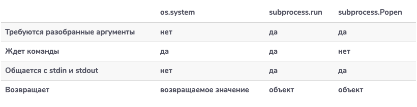

Повторяющиеся задачи созрели для автоматизации. Разработчики и системные администраторы обычно автоматизируют рутинные задачи, такие как проверки работоспособности и резервное копирование файлов, с помощью сценариев оболочки. Однако, поскольку эти задачи становятся более сложными, сценарии оболочки могут усложняться в обслуживании.
К счастью, мы можем использовать Python вместо сценариев оболочки для автоматизации. Python предоставляет методы для запуска команд оболочки, предоставляя нам ту же функциональность, что и сценарии оболочки. Изучение того, как выполнять команды оболочки в Python, открывает нам возможность автоматизировать компьютерные задачи структурированным и масштабируемым образом.
В этой статье мы рассмотрим различные способы выполнения команд оболочки в Python и идеальную ситуацию для использования каждого метода.
Python
позволяет нам немедленно выполнить
команду оболочки, которая хранится в
строке, используя функцию os.system().
Давайте
начнем с создания нового файла Python с
именем echo_adelle.py и
введите следующее:
importosos.system("echo Hello from the other side!")
Первое,
что мы делаем в нашем Python файле, это
импортируем модуль os,
который содержит функцию system,
которая может выполнять команды
оболочки. Следующая строка делает
именно это, запускает команду echo в
нашей оболочке через Python.
В вашем терминале запустите этот файл с помощью следующей команды, и вы должны увидеть соответствующий вывод:
$ python3 echo_adelle.pyHello from the other side!
По
мере того, как команды echo выводятся
в наш stdout, os.system() также
возвращает код завершения команды
оболочки. Код 0 означает, что он
работает без проблем, а любое другое
число означает ошибку.
Давайте
создадим новый файл с именем cd_return_codes.py и
введите следующее:
import oshome_dir = os.system("cd ~")("`cd ~` ran with exit code %d"% home_dir)unknown_dir = os.system("cd doesnotexist")("`cd doesnotexis` ran with exit code %d"% unknown_dir)
В этом сценарии мы создаем две переменные, в которых хранятся результаты выполнения команд, которые изменяют каталог на домашнюю папку и на несуществующую папку. Запустив этот файл, мы увидим:
$ python3 cd_return_codes.py`cd ~` ran with exit code 0sh: line 0: cd: doesnotexist: No such file or directory`cd doesnotexist` ran with exit code 256
Первая
команда, которая изменяет каталог на
домашний каталог, выполняется
успешно. Следовательно, os.system() возвращает
код ноль, который хранится в home_dir. С
другой стороны, unknown_dir сохраняет
код завершения неудачной команды bash,
чтобы изменить каталог на несуществующую
папку.
Функция os.system() выполняет
команду, печатает любой вывод команды
на консоль и возвращает код завершения
команды. Если нам нужно более детальное
управление вводом и выводом команды
оболочки в Python, мы должны
использовать модуль subprocess.
Модуль subprocess -
это рекомендуемый Python способ выполнения
команд оболочки. Это дает нам гибкость
для подавления вывода команд оболочки
или цепочки входов и выходов различных
команд вместе, в то же время обеспечивая
аналогичный опыт os.system() для
базовых сценариев использования.
В
новом файле с именем list_subprocess.py напишите
следующий код:
importsubprocesslist_files = subprocess.run(["ls","-l"])("The exit code was: %d"% list_files.returncode)
В
первой строке мы импортируем модуль subprocess,
который является частью стандартной
библиотеки Python. Затем мы используем
функцию subprocess.run() для
выполнения команды. Также как и
команда os.system(), subprocess.run() возвращает
код того, что было выполнено.
Обратите
внимание, что subprocess.run() принимает
список строк в качестве входных данных
вместо одной строки. Первым элементом
списка является название команды. Остальные
пункты списка - это флаги и аргументы
команды.
Примечание: Как
правило, вам нужно отделить аргументы
, основанные на пространстве, например
, ls
-alh будет ["ls",
"-alh"],
а ls
-a -l -h,
превратится в ["ls",
"-a", -"l", "-h"].
Запустите этот файл, и вывод вашей консоли будет похож на:
$ python3 list_subprocess.pytotal 80-rw-r--r--@ 1 stackabuse staff 216 Dec 6 10:29 cd_return_codes.py-rw-r--r--@ 1 stackabuse staff 56 Dec 6 10:11 echo_adelle.py-rw-r--r--@ 1 stackabuse staff 116 Dec 6 11:20 list_subprocess.pyThe exit code was: 0
Теперь
давайте попробуем использовать одну
из более продвинутых функций subprocess.run(),
а именно игнорирование вывода в stdout. В
том же файле list_subprocess.py измените:
list_files = subprocess.run(["ls","-l"])
на
list_files = subprocess.run(["ls","-l"], stdout=subprocess.DEVNULL)
Стандартный
вывод команды теперь передается на
специальное устройство /dev/null,
что означает, что вывод не будет
отображаться на наших консолях. Запустите
файл в вашей оболочке, чтобы увидеть
следующий вывод:
$ python3 list_subprocess.pyThe exit code was: 0
Что
если мы хотим получить результат
команды? subprocess.run() поможет
сделать это. Создайте новый файл с
именем cat_subprocess.py,
набрав следующее:
importsubprocessuseless_cat_call = subprocess.run(["cat"], stdout=subprocess.PIPE,text=True, input="Hello from the other side")print(useless_cat_call.stdout) # Hellofromthe other side
Мы используем довольно много параметров, давайте рассмотрим их:
stdout=subprocess.PIPE говорит
Python перенаправить результат выполнения
команды в объект, чтобы позже его можно
было прочитать вручную
text=True возвращает stdout и
в stderr виде
строк. Тип возвращаемого значения
по умолчанию - байты.
input="Hello
from the other side" говорит
Python добавить строку в качестве ввода
в команду cat.
Запуск этого файла приводит к следующему выводу:
Hello from the other side
Мы
также можем бросить Exception без
проверки значения возврата. В новом
файле false_subprocess.py добавьте
код ниже:
importsubprocessfailed_command = subprocess.run(["false"],check=True)print("The exit code was: %d" % failed_command.returncode)
В вашем терминале запустите этот файл. Вы увидите следующую ошибку:
$ python3 false_subprocess.pyTraceback (most recent call last):File "false_subprocess.py", line 4, infailed_command = subprocess.run(["false"], check=True)File "/usr/local/python/3.7.5/Frameworks/Python.framework/Versions/3.7/lib/python3.7/subprocess.py", line 512, in runoutput=stdout, stderr=stderr)subprocess.CalledProcessError: Command '['false']' returned non-zero exit status 1.
Используя check=True,
мы сообщаем Python, что нужно вызывать
любые исключения, если возникает
ошибка. Так как мы столкнулись с
ошибкой, оператор print в
последней строке не был выполнен.
Функция subprocess.run() дает
нам огромную гибкость. Эта функция
представляет собой упрощенную
абстракцию класса subprocess.Popen,
которая предоставляет дополнительные
функциональные возможности, которые
мы можем исследовать.
Класс subprocess.Popen предоставляет
больше возможностей для разработчика
при взаимодействии с оболочкой. Тем
не менее, мы должны быть более точными
в получении результатов и ошибок
По
умолчанию subprocess.Popen не
останавливает обработку программы
Python, если ее команда не завершила
выполнение. В новом файле с
именем list_popen.py введите
следующее:
importsubprocesslist_dir = subprocess.Popen(["ls", "-l"])list_dir.wait()
Этот
код эквивалентен list_subprocess.py. Он
запускает команду с помощью subprocess.Popen и
ожидает ее завершения, прежде чем
выполнить оставшуюся часть сценария
Python.
Допустим, мы не хотим ждать завершения выполнения команды оболочки, чтобы программа могла работать над другими вещами. Как узнать, когда команда оболочки закончила выполнение?
Метод poll() возвращает
код завершения, если команда закончит
работу, или None если
он все еще выполняется. Например,
если бы мы хотели проверить, завершено
ли list_dir,
а не ждать его, у нас была бы следующая
строка кода:
list_dir.poll()
Для
управления вводом и выводом subprocess.Popen нам
нужно использовать метод communicate().
В
новый файл с именем cat_popen.py добавьте
следующий фрагмент кода:
importsubprocessuseless_cat_call = subprocess.Popen(["cat"], stdin=subprocess.PIPE, stdout=subprocess.PIPE, stderr=subprocess.PIPE,text=True)output, errors = useless_cat_call.communicate(input="Hello from the other side!")useless_cat_call.wait()print(output)print(errors)
Метод communicate() принимает аргумент input,
который используется для передачи
входных данных команде
оболочки. Метод communicate также
возвращает stdout и stderr когда
они установлены.
Мы
рассмотрели три способа запуска команд
оболочки в Python с использованием
класса subprocess.Popen. Давайте
еще раз рассмотрим их характеристики,
чтобы узнать, какой метод лучше всего
подходит для требований проекта.
Если
вам нужно выполнить одну или несколько
простых команд и вам не помешает, если
их вывод поступит в консоль, вы можете
использовать команду os.system(). Если
вы хотите управлять вводом и выводом
команды оболочки, используйте subsystem.run(). Если
вы хотите выполнить команду и продолжить
выполнять другую работу, пока она
выполняется, используйте subprocess.Popen.
Вот таблица с некоторыми различиями в юзабилити, которые вы также можете использовать для обоснования своего решения:
